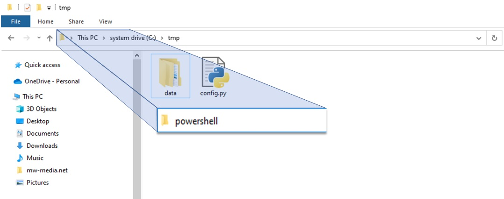
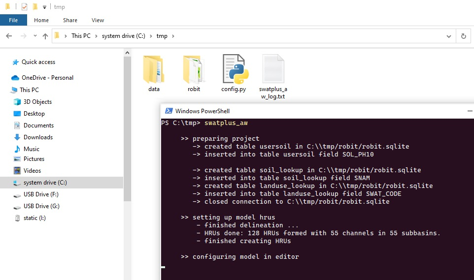

Setting up the model
Once the config has been filled, it should be placed in the same directory as the
data directory (Figure 7). User can run the workflow using Command Prompt or
PowerShell by following these
steps

Figure 7: Directory where the model will be setup and
how to open cmd or powershell
- Open the directory where the data directory and config are located.
- Click the address bar and type ‘cmd’ or ‘powershell’
- Press the ENTER key to open the Command Prompt window in the current
directory (Figure 7). Note that you can open Command Prompt outside the
current directory from the start menu, but the directory needs to be changed
to the location of the config using the CD command.
- Type ‘swatplus_aw’ and press Enter to start running the SWAT+ AW. The
workflow will set up the model based on the settings specified in the config
(Figure 8). The model being set up will appear in the same directory as the
config. If you change a setting in the config, you must change the name of
the project too; otherwise, the current project will be overwritten.

Figure 8: Running the SWAT+ AW
Once the model setup finishes, the user can open the model in QSWAT+ and SWAT+
Editor GUI for visualisation. The model project files that are created by the
workflow are fully compatible with the GUI, and further changes can be made in the
GUI.
Retrieving config and data from existing model
The procedure for retrieving the config and data is the same as for setting up the
model. The only difference is that you should not have the config in the directory
containing the model. However, if you have the config, make sure you set the
Model_2_config setting to True. In that case, the config used to retrieve the new
config from the existing model is saved into a directory called old_configs. Thus
the user can use previously used configs later. Be sure to move or rename the existing data
directory as it will be overwritten in the process.
Running a specific step with "swatplus_api"
The user can run a specific step without runing the whole workflow by using the 'swatplus_api'
command. This command should be executed in the directory where the model is setup. if the
command is executed without any argument (option), it lists available options as follows
- prepare_project
- delineate_watershed
- create_hrus
- setup_editor_project
- configure_model_options
- setup_management
- write_files
- run_swatplus
- make_figures
- calibrate
To use the api, type: 'swatplus_api [option]' in command prompt or PowerShell and press 'Enter'